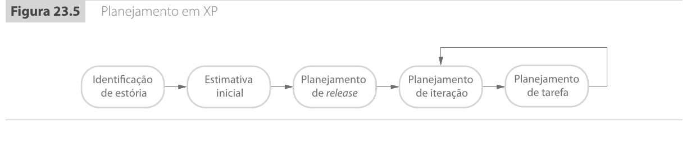

Introdução10.1
Hoje você vai ver por que planejar um projeto de software não é tentar adivinhar o futuro, mas reduzir a incerteza o suficiente para tomar decisões responsáveis.
Até aqui, estudamos processos, requisitos, modelos, arquitetura, testes, evolução e manutenção. Esses temas explicam como o software é especificado, construído, validado e modificado. Agora o foco muda um pouco. Em vez de olhar apenas para o produto técnico, vamos olhar para o projeto como trabalho organizado.
Em projetos reais, uma equipe precisa responder a compromissos de prazo, custo, escopo, risco e qualidade. O gerente de projeto precisa decidir quem fará cada parte do trabalho, quando cada parte deve começar, quais dependências existem, quais recursos serão necessários e como o progresso será acompanhado.
Segundo Sommerville, um dos trabalhos mais importantes do gerente de projeto é exatamente esse planejamento. O plano ajuda a decompor o trabalho, comunicar expectativas, monitorar progresso e antecipar problemas.
O ponto central é simples. Um plano de projeto não é uma promessa mágica de que nada mudará. Ele é uma hipótese organizada sobre como o trabalho será feito. Essa hipótese deve ser revisada conforme a equipe aprende mais sobre o sistema, sobre o cliente, sobre os riscos e sobre sua própria capacidade de entrega.
O planejamento existe porque software envolve incerteza10.2
Quando um projeto começa, a equipe raramente sabe tudo o que precisaria saber.
Os requisitos podem estar incompletos. A tecnologia pode ser nova. O cliente pode mudar prioridades. Uma integração pode ser mais difícil do que parecia. Pessoas podem sair da equipe. Um fornecedor pode atrasar. Um módulo aparentemente simples pode revelar regras de negócio escondidas.
Planejar é uma forma de lidar com isso sem fingir que o mundo é estável.
Um bom plano tenta organizar cinco aspectos principais:
- escopo, que indica o trabalho a ser feito;
- esforço, que estima quanto trabalho humano será necessário;
- cronograma, que distribui esse trabalho no calendário;
- recursos, que incluem pessoas, ferramentas, hardware, software, viagens e treinamentos;
- riscos, que indicam o que pode dar errado e como a equipe reagirá.
Esses aspectos estão conectados. Se o prazo diminui, o esforço pode aumentar. Se a equipe perde uma pessoa experiente, o cronograma pode ficar irrealista. Se o escopo cresce sem controle, o orçamento deixa de representar o projeto real. Se a tecnologia é desconhecida, a estimativa inicial fica mais frágil.
O plano como ferramenta de comunicação10.2.1
O plano de projeto também serve para comunicação. Ele torna explícito o que a equipe pretende entregar, quando pretende entregar e quais condições precisam ser verdadeiras para que isso aconteça.
Sem plano, cada pessoa pode ter uma expectativa diferente.
O cliente pode acreditar que a primeira versão terá todos os relatórios. A equipe pode acreditar que os relatórios ficaram para uma segunda fase. A gerência pode acreditar que duas pessoas são suficientes. Os desenvolvedores podem saber que a integração com o sistema legado exigirá alguém especialista.
O plano não elimina conflito, mas torna o conflito visível cedo.
Imagine um sistema acadêmico que precisa entregar matrícula on-line, emissão de boletos, histórico escolar e integração com autenticação institucional.
Sem planejamento, a equipe pode começar pela tela mais fácil e deixar a autenticação para o final. Isso parece produtivo nas primeiras semanas, porque várias telas aparecem rapidamente. O problema surge depois, quando a autenticação muda a forma como permissões, sessões, perfis e auditoria devem funcionar.
Com planejamento, a equipe identifica a autenticação como dependência inicial. Talvez ela não implemente tudo no primeiro dia, mas precisa ao menos entender o risco e reservar tempo para uma prova de conceito.
O plano, nesse caso, evita uma falsa sensação de progresso.
Considere uma equipe pequena que promete entregar um aplicativo em três meses. O cliente quer login, catálogo, carrinho, pagamento, nota fiscal e relatório administrativo.
Se a equipe apenas aceitar o prazo, o projeto parece aprovado. Mas um plano inicial pode mostrar que a integração de pagamento e nota fiscal depende de fornecedores externos, homologação e testes em ambiente específico.
Nesse caso, o plano ajuda a negociar uma primeira entrega realista, por exemplo catálogo, carrinho e pedido sem cobrança automática, deixando pagamento e nota fiscal para um incremento posterior.
O plano não serve para dizer "não" por hábito. Ele serve para mostrar as consequências de dizer "sim".
Os três momentos do planejamento10.3
Sommerville destaca que o planejamento aparece em momentos diferentes do ciclo de vida do projeto. Cada momento tem um grau diferente de informação e um objetivo diferente.
| Momento | O que se sabe | Para que serve o plano |
|---|---|---|
| Proposta | Descrição inicial, objetivos gerais e restrições conhecidas | Decidir se vale concorrer, estimar preço e mostrar viabilidade |
| Iniciação | Mais detalhes de requisitos, equipe provável e recursos disponíveis | Organizar trabalho, orçamento, equipe, riscos e primeiros marcos |
| Acompanhamento | Progresso real, problemas encontrados e mudanças de requisitos | Atualizar estimativas, replanejar e renegociar quando necessário |
Essa divisão é importante porque uma estimativa feita no estágio de proposta não tem a mesma confiabilidade de uma estimativa feita depois que a arquitetura foi definida, os riscos principais foram explorados e a equipe já demonstrou sua velocidade real.
Planejamento na proposta10.3.1
No estágio de proposta, a organização ainda pode estar tentando ganhar um contrato. Ela precisa estimar custo, prazo e viabilidade com informações incompletas.
Esse é um momento delicado. Se a estimativa for alta demais, a empresa pode perder o contrato. Se for baixa demais, pode ganhar um projeto inviável. Se prometer mais do que consegue entregar, pode destruir a relação com o cliente e comprometer financeiramente a organização.
O plano de proposta costuma ser especulativo, mas não deve ser irresponsável. Ele deve deixar claras as suposições usadas.
Uma prefeitura solicita proposta para um sistema de protocolo digital. A descrição diz que o sistema deve permitir abertura de processos, tramitação entre setores e consulta pública.
Antes de estimar, a empresa precisa assumir algumas hipóteses.
- Haverá integração com login único municipal.
- A consulta pública não exibirá documentos sigilosos.
- A migração de dados históricos não fará parte da primeira entrega.
- O cliente fornecerá acesso ao sistema atual em até duas semanas.
Se essas hipóteses mudarem, o custo e o prazo também mudam. Por isso, um plano de proposta sério registra premissas, não apenas datas.
Planejamento na iniciação10.3.2
Depois que o projeto é aprovado, o plano precisa ficar mais operacional. A equipe já sabe mais sobre o contrato, sobre os requisitos iniciais, sobre os recursos disponíveis e sobre as pessoas que participarão.
Nesse momento, o plano ajuda a responder decisões práticas.
- Quantas pessoas serão necessárias.
- Que perfis técnicos precisam estar no projeto.
- Quais entregas serão feitas primeiro.
- Que ferramentas e ambientes precisam ser preparados.
- Quais riscos devem ser monitorados desde o início.
- Que relatórios ou reuniões de acompanhamento serão usados.
O plano de iniciação não deve ser confundido com uma descrição perfeita do futuro. Ele é o primeiro plano suficientemente detalhado para organizar a execução.
Planejamento durante o desenvolvimento10.3.3
À medida que o projeto avança, o plano precisa ser atualizado. Isso acontece porque a equipe aprende.
Ela aprende que uma integração é mais instável do que parecia. Aprende que uma parte do domínio é mais complexa. Aprende que um componente reaproveitado não atende a todos os casos. Aprende que uma pessoa da equipe resolve certo tipo de problema mais rápido. Aprende também que alguns requisitos originalmente pedidos perderam prioridade.
Um plano que nunca muda pode parecer disciplinado, mas pode estar apenas ignorando a realidade.
O problema não é mudar o plano. O problema é mudar o projeto sem atualizar o plano. Quando o trabalho real e o plano divergem por muito tempo, a gerência perde capacidade de decisão.
Custo de software não é a mesma coisa que preço10.4
Uma confusão comum em planejamento é imaginar que o preço cobrado do cliente seja apenas o custo de desenvolvimento somado a uma margem de lucro. Essa fórmula é simples, mas não descreve bem muitos projetos reais.
Sommerville separa o problema em duas ideias.
- Custo é o que a organização gasta para executar o projeto.
- Preço é o valor negociado com o cliente.
O custo influencia o preço, mas não determina o preço sozinho.
Os principais componentes de custo10.4.1
Em projetos de software, o maior custo normalmente é o esforço humano. Software profissional exige análise, desenvolvimento, testes, reuniões, documentação, coordenação, correção de defeitos, configuração de ambiente e comunicação com o cliente.
Sommerville destaca três grupos principais de custo:
| Tipo de custo | Exemplos |
|---|---|
| Esforço | salários, encargos, tempo de gerentes, analistas, desenvolvedores, testadores e especialistas |
| Hardware e software | servidores, licenças, ferramentas, ambientes, serviços de plataforma e manutenção |
| Viagens e treinamentos | deslocamentos, reuniões presenciais, capacitação da equipe e tempo gasto fora do desenvolvimento direto |
O esforço tende a dominar porque software é intensivo em conhecimento. Mesmo quando ferramentas e servidores custam dinheiro, o maior impacto costuma estar no tempo das pessoas.
Uma equipe estima que um projeto exigirá 40 pessoas-mês de esforço.
Se o custo médio mensal de uma pessoa, incluindo salário, encargos e overhead organizacional, for R$ 18.000,00, apenas o esforço custará:
$$ 40 \times 18.000 = 720.000 $$
Se ainda houver R$ 60.000,00 em licenças, R$ 30.000,00 em infraestrutura e R$ 20.000,00 em viagens, o custo estimado será:
$$ 720.000 + 60.000 + 30.000 + 20.000 = 830.000 $$
Esse número ainda não é necessariamente o preço. Ele é a base econômica mínima para discutir preço, risco e margem.
Fatores que alteram o preço10.4.2
O preço pode subir ou descer por motivos comerciais, estratégicos e contratuais.
| Fator | Efeito possível sobre o preço |
|---|---|
| Oportunidade de mercado | A empresa pode cobrar menos para entrar em um novo setor e ganhar referência. |
| Incerteza da estimativa | Quanto maior a incerteza, maior pode ser a contingência embutida no preço. |
| Condições contratuais | O preço pode mudar se o cliente exigir propriedade exclusiva do código ou aceitar reúso. |
| Volatilidade de requisitos | Requisitos instáveis podem levar a preço inicial menor e mudanças posteriores caras. |
| Saúde financeira | Uma empresa pode aceitar margem baixa para manter fluxo de caixa ou equipe ocupada. |
Essa separação é essencial para gerência. Um projeto pode ser tecnicamente bem estimado e ainda assim ter preço ruim. Também pode ter preço estrategicamente baixo, mas exigir controle rigoroso de escopo para não virar prejuízo.
Preço para ganhar10.4.3
Sommerville discute uma estratégia conhecida como preço para ganhar. Nela, a empresa tenta estimar o valor que o cliente espera pagar ou que será competitivo no processo de contratação. Depois, adapta a proposta a esse preço.
Essa estratégia pode ser legítima quando todas as partes entendem que escopo, prazo e qualidade precisam caber no orçamento. Ela se torna problemática quando a empresa promete uma funcionalidade irrealista apenas para vencer a concorrência e depois depende de cobranças altas por mudanças inevitáveis.
Uma empresa calcula que um sistema de gestão de clínicas custará R$ 1.000.000,00 para ser feito com todo o escopo solicitado. Ela sabe, porém, que o cliente tem orçamento máximo de R$ 750.000,00.
Uma postura responsável seria propor uma primeira versão menor, com cadastro de pacientes, agenda, prontuário básico e faturamento simples. Relatórios avançados, integração com laboratórios e aplicativo móvel ficariam para outra fase.
Uma postura arriscada seria prometer tudo por R$ 750.000,00 e esperar renegociar depois. Nesse caso, o planejamento deixa de ser ferramenta de transparência e vira aposta comercial.
Desenvolvimento dirigido a planos10.5
O desenvolvimento dirigido a planos é uma abordagem em que o trabalho é planejado em detalhes antes e durante a execução. O plano define atividades, responsabilidades, produtos de trabalho, marcos, entregáveis, cronograma, recursos e mecanismos de acompanhamento.
Essa abordagem é comum em projetos grandes, contratos formais, sistemas críticos, ambientes regulados e projetos com várias organizações envolvidas.
Ela contrasta com abordagens ágeis, nas quais muitas decisões de detalhe são adiadas para o momento em que há mais informação. A diferença principal não é que uma abordagem planeja e a outra não planeja. A diferença está no horizonte e no nível de detalhe do planejamento.
Quando o plano detalhado ajuda10.5.1
O planejamento antecipado ajuda quando há dependências organizacionais importantes.
- Pessoas especialistas precisam ser reservadas com antecedência.
- Ambientes precisam ser contratados ou configurados.
- Entregáveis contratuais precisam ser aprovados formalmente.
- Certificações, auditorias ou validações externas precisam ser planejadas.
- Várias equipes precisam coordenar interfaces entre sistemas.
Nesses casos, adiar todas as decisões pode criar caos. Se duas equipes só descobrem no final que interpretaram uma interface de formas incompatíveis, o retrabalho pode ser enorme.
Quando o plano detalhado atrapalha10.5.2
O planejamento detalhado atrapalha quando tenta congelar cedo demais decisões que dependem de aprendizado.
Em sistemas de negócio com ambiente competitivo, os requisitos podem mudar rapidamente. O cliente pode descobrir novas prioridades ao ver as primeiras versões. Uma regra de negócio pode ser reformulada. Uma integração pode ser substituída por outra.
Se o plano for tratado como contrato imutável, a equipe pode gastar energia defendendo uma previsão antiga em vez de entregar valor atual.
Sommerville defende uma visão equilibrada. Projetos diferentes pedem combinações diferentes de planejamento dirigido a planos e planejamento ágil.
Um sistema de controle de equipamento médico exige documentação, análise de riscos, testes rigorosos e evidências para aprovação. Nesse contexto, uma abordagem fortemente dirigida a planos faz sentido.
O plano ajuda a garantir rastreabilidade, revisões formais, validação e controle de mudanças. A equipe não pode simplesmente alterar prioridades toda semana sem avaliar segurança, documentação e impacto regulatório.
Uma startup está criando uma plataforma de reservas para um nicho de mercado ainda incerto. A equipe precisa descobrir quais funcionalidades realmente atraem usuários.
Nesse contexto, um plano detalhado de doze meses pode envelhecer rapidamente. A equipe provavelmente precisa de ciclos curtos, validação com usuários e replanejamento frequente.
Mesmo assim, ela ainda precisa planejar orçamento, equipe, releases e riscos. O planejamento não desaparece. Ele muda de forma.
O plano de projeto10.6
Em projetos dirigidos a planos, o plano de projeto organiza as decisões principais de gerenciamento. Ele não é apenas uma lista de tarefas. Ele descreve como o projeto será conduzido.
Sommerville apresenta um conjunto típico de seções.
| Seção do plano | Função |
|---|---|
| Introdução | Resume objetivos, restrições, orçamento, prazo e contexto do projeto. |
| Organização do projeto | Define equipe, papéis, responsabilidades e forma de coordenação. |
| Análise de riscos | Identifica riscos, probabilidades, impactos e estratégias de mitigação. |
| Recursos de software e hardware | Lista ferramentas, ambientes, plataformas, licenças e infraestrutura. |
| Divisão de trabalho | Decompõe o projeto em atividades, marcos e resultados esperados. |
| Cronograma | Mostra dependências, duração, esforço, datas e alocação de pessoas. |
| Monitoramento e relatórios | Define como o progresso será acompanhado e comunicado. |
Além do plano principal, projetos maiores podem ter planos complementares.
| Plano complementar | Para que serve |
|---|---|
| Plano de qualidade | Define padrões, procedimentos e critérios de qualidade. |
| Plano de validação | Define abordagem, recursos e cronograma de validação. |
| Plano de configuração | Define controle de versões, mudanças, baselines e releases. |
| Plano de manutenção | Estima necessidades de manutenção, esforço e custos futuros. |
| Plano de desenvolvimento de pessoal | Planeja treinamento e evolução das habilidades da equipe. |
Um plano precisa ser monitorável10.6.1
Um plano que não permite acompanhamento é apenas intenção.
Para ser monitorável, o plano precisa ter resultados observáveis. Não basta dizer que a equipe "trabalhará na arquitetura". É melhor indicar que, até determinada data, a equipe deve produzir uma visão arquitetural inicial, validar um protótipo de integração e revisar os riscos técnicos principais.
Resultados observáveis permitem comparar progresso planejado e progresso real.
Compare duas formas de planejar a mesma atividade.
| Formulação fraca | Formulação melhor |
|---|---|
| Trabalhar no módulo de relatórios. | Implementar relatório de vendas por período, com filtros por loja e exportação CSV, até o fim da semana 4. |
| Melhorar segurança. | Ativar autenticação por provedor institucional, revisar permissões de administrador e registrar tentativas de acesso negadas. |
| Fazer testes. | Executar testes de integração do checkout, registrar defeitos críticos e entregar relatório de validação do fluxo de pagamento. |
A segunda coluna facilita acompanhamento porque deixa claro qual resultado será visto.
O processo de planejamento é iterativo10.7
Sommerville apresenta o planejamento como um ciclo. Primeiro a equipe identifica restrições, riscos, marcos e entregáveis. Depois define um cronograma, faz o trabalho, monitora progresso e reage a desvios.
A Figura 23.1 do livro mostra esse ciclo como um processo com caminhos de retorno. Repare que os desvios pequenos voltam para o cronograma, enquanto problemas graves disparam mitigação e replanejamento.

A mesma ideia pode ser redesenhada de forma mais enxuta assim:
O ciclo mostra uma ideia importante. Planejamento e execução não são fases completamente separadas. A execução produz informação, e essa informação melhora o planejamento.
Pequenos desvios e problemas graves10.7.1
Nem todo desvio exige renegociar o projeto. Pequenos desvios são esperados, porque estimativas iniciais são aproximadas. A equipe pode ajustar tarefas, reorganizar prioridades e atualizar datas internas.
Problemas graves exigem outra postura. Se uma tecnologia central não funciona, se uma integração é bloqueada, se a equipe perdeu uma pessoa essencial ou se o cliente mudou um requisito crítico, o plano original pode deixar de ser viável.
Nesses casos, o gerente precisa iniciar ações de mitigação e talvez renegociar escopo, prazo, custo ou entregáveis.
Uma tarefa de implementação foi estimada em dez dias e levou doze. Isso pode ser um pequeno desvio, especialmente se havia contingência no cronograma.
Agora considere outro caso. A equipe planejou usar uma API externa para consulta fiscal, mas o fornecedor informa que o acesso de homologação só estará disponível em dois meses. Essa dependência bloqueia testes e entrega de funcionalidades centrais.
Aqui não basta pedir que a equipe "trabalhe mais rápido". O projeto precisa de mitigação, como simular a API temporariamente, mudar a ordem das entregas ou renegociar o prazo da funcionalidade afetada.
Programação de projeto e cronograma10.8
A programação de projeto é a parte do planejamento que decide como o trabalho será dividido em tarefas, quando essas tarefas serão executadas e quem trabalhará nelas.
Ela envolve estimar:
- duração de cada tarefa no calendário;
- esforço necessário para realizar a tarefa;
- dependências entre tarefas;
- pessoas alocadas;
- recursos necessários;
- datas de início e término;
- marcos e entregáveis.
Sommerville observa que tanto processos dirigidos a planos quanto processos ágeis precisam de algum tipo de cronograma inicial. A diferença está no detalhe. Em processos tradicionais, o cronograma completo costuma ser planejado cedo e revisado durante o projeto. Em processos ágeis, há um cronograma global mais leve e planejamento detalhado para iterações curtas.

A Figura 23.2 organiza a programação como um fluxo. Primeiro a equipe identifica atividades, depois dependências, depois recursos, depois pessoas e, por fim, produz gráficos de projeto. A seta de retorno indica que o cronograma pode precisar ser revisado quando a alocação ou os gráficos revelam conflito.
Tarefa, duração e esforço10.8.1
Uma tarefa de projeto tem pelo menos quatro informações importantes.
| Elemento | Significado |
|---|---|
| Duração | Tempo de calendário, como cinco dias, duas semanas ou um mês. |
| Esforço | Quantidade de trabalho humano, como dez pessoas-dia ou três pessoas-mês. |
| Deadline | Data limite para conclusão. |
| Resultado tangível | Evidência de término, como documento, código revisado, testes passando ou relatório. |
Duração e esforço não são a mesma coisa.
Uma tarefa pode ter duração de dez dias e esforço de cinco pessoas-dia. Isso significa que alguém trabalha nela em meio período ou com interrupções. Outra tarefa pode ter duração de dez dias e esforço de vinte pessoas-dia. Isso significa que duas pessoas trabalham nela em paralelo, ou que várias pessoas contribuem em parte do período.
Uma equipe estima a criação de um protótipo de integração com serviço de pagamento.
| Item | Valor |
|---|---|
| Duração | 10 dias úteis |
| Esforço | 15 pessoas-dia |
| Pessoas | 1 desenvolvedor backend em tempo integral e 1 desenvolvedor frontend por meio período |
| Resultado | Protótipo executando pagamento simulado e registrando retorno da transação |
A duração é de duas semanas no calendário. O esforço é maior do que dez pessoas-dia porque há mais de uma pessoa envolvida.
Dependências entre tarefas10.8.2
Dependência significa que uma tarefa só pode começar ou terminar depois de outra.
Por exemplo, implementar uma tela pode depender da definição da API. Testar integração pode depender do ambiente de homologação. Gerar relatórios pode depender do modelo de dados. Treinar usuários pode depender da estabilização da versão.
Dependências são uma das razões pelas quais cronograma não é apenas soma de durações.
| Tarefa | Duração | Dependências |
|---|---|---|
| T1: definir modelo de dados | 5 dias | nenhuma |
| T2: implementar API de alunos | 8 dias | T1 |
| T3: implementar tela de cadastro | 6 dias | T2 |
| T4: preparar massa de testes | 4 dias | T1 |
| T5: testar fluxo de cadastro | 5 dias | T3, T4 |
Mesmo que T4 seja curta, T5 não pode começar antes de T3 e T4 terminarem. Se T3 atrasar, T5 atrasa. Se T5 for necessária para uma entrega contratual, o atraso se propaga.
Marcos e entregáveis10.8.3
Sommerville diferencia milestone e entregável.
Um milestone é um ponto de controle no projeto. Ele permite avaliar progresso. Pode ser interno, como "arquitetura revisada" ou "ambiente de testes pronto".
Um entregável é um produto de trabalho entregue ao cliente. Pode ser uma especificação, um protótipo, uma versão executável, um relatório de testes ou um manual.
Todo entregável importante pode ser um milestone, mas nem todo milestone é entregue ao cliente.
Em um projeto de sistema financeiro, a equipe define os seguintes pontos.
| Ponto | Tipo | Evidência |
|---|---|---|
| Modelo de dados aprovado pela equipe técnica | Milestone interno | Ata de revisão técnica |
| Protótipo de conciliação bancária demonstrado ao cliente | Entregável | Versão executável e roteiro de demonstração |
| Testes de integração com banco concluídos | Milestone interno | Relatório de execução dos testes |
| Manual de operação entregue | Entregável | Documento enviado e aceito pelo cliente |
Essa distinção ajuda a não confundir controle gerencial com entrega contratual.
Representando cronogramas10.9
Cronogramas podem ser representados em tabelas, planilhas, gráficos de barras e redes de atividades.
Sommerville destaca os gráficos de barras, conhecidos como gráficos de Gantt, porque eles mostram as atividades ao longo do calendário. Eles ajudam a visualizar início, fim, paralelismo, sobreposição e marcos.
Uma representação textual simples pode ser suficiente em uma aula.
| Tarefa | Semana 1 | Semana 2 | Semana 3 | Semana 4 | Semana 5 |
|---|---|---|---|---|---|
| T1: requisitos principais | █ | █ | |||
| T2: modelo de dados | █ | █ | |||
| T3: API inicial | █ | █ | |||
| T4: interface de cadastro | █ | █ | |||
| T5: testes de integração | █ |
Essa tabela mostra que T3 e T4 podem ocorrer em paralelo, mas T5 fica no final porque depende das duas.
O mesmo cronograma fica mais fácil de ler quando aparece como gráfico de barras.
A Figura 23.3 mostra a versão de Sommerville, já com atividades, paralelismo e milestones marcados no calendário.

Alocação de pessoas10.9.1
Além de tarefas, o cronograma precisa considerar pessoas. Uma pessoa pode estar em mais de um projeto, pode tirar férias, pode participar de treinamento ou pode ser especialista em uma parte crítica.
Esse detalhe torna o planejamento mais realista.
Se a única pessoa que entende autenticação institucional estiver alocada em outro projeto durante três semanas, não adianta colocar a tarefa de autenticação no cronograma como se qualquer pessoa pudesse executá-la.

A Figura 23.4 é útil porque desloca a atenção das tarefas para as pessoas. Ela mostra que o mesmo cronograma pode ficar inviável quando uma pessoa aparece em várias atividades, quando há alocações parciais ou quando um especialista fica concentrado em uma tarefa específica.
Uma equipe tem quatro pessoas.
| Pessoa | Disponibilidade | Observação |
|---|---|---|
| Ana | 100% | backend e banco de dados |
| Bruno | 50% | frontend, também está em outro projeto |
| Carla | 100% | testes e automação |
| Diego | 25% | especialista em autenticação institucional |
O cronograma inicial coloca autenticação nas semanas 2 e 3. Porém, Diego só está disponível na semana 4. O plano precisa mudar.
Uma alternativa é antecipar a preparação de telas e banco, deixando a integração real de autenticação para a semana 4. Outra alternativa é treinar Ana para assumir parte da tarefa, reduzindo dependência de Diego.
O cronograma melhora quando representa restrições humanas reais, não apenas tarefas abstratas.
Contingência e prazos realistas10.10
Cronogramas de software tendem ao otimismo. A equipe imagina o caminho em que tudo funciona, todos estão disponíveis, a biblioteca atende, o cliente responde rápido e nenhum defeito grave aparece.
Projetos reais raramente seguem esse caminho.
Sommerville recomenda considerar a possibilidade de problemas e adicionar contingência. Dependendo do tipo de projeto, da incerteza, das restrições e da experiência da equipe, a contingência pode adicionar algo como 30% a 50% ao esforço e ao tempo necessário.
Isso não significa inflar estimativas sem critério. Significa reconhecer que estimativa sem margem é frequentemente uma ficção.
O erro de planejar no limite10.10.1
Planejar no limite cria fragilidade. Se todas as tarefas estão encadeadas sem folga, qualquer atraso pequeno afeta a entrega final.
| Situação | Consequência |
|---|---|
| Tarefa crítica sem folga | Pequeno atraso desloca o projeto inteiro. |
| Especialista único sem substituto | Indisponibilidade paralisa dependências. |
| Ambiente externo sem plano alternativo | Atraso do fornecedor bloqueia testes. |
| Escopo sem prioridade | Tudo parece obrigatório, mesmo quando o prazo aperta. |
Um plano maduro não apenas distribui tarefas. Ele identifica onde o projeto é frágil.
Uma equipe estima três tarefas sequenciais.
| Tarefa | Estimativa otimista |
|---|---|
| Integração com API externa | 10 dias |
| Implementação do fluxo de compra | 12 dias |
| Testes de integração | 8 dias |
O total otimista é de 30 dias. Se o projeto promete entrega exatamente em 30 dias, não há espaço para atraso de fornecedor, defeitos, mudança de contrato da API ou indisponibilidade de ambiente.
Com 30% de contingência, o planejamento gerencial consideraria aproximadamente:
$$ 30 \times 1,3 = 39\text{ dias} $$
Isso não obriga a equipe a gastar 39 dias. Significa que o compromisso externo deve reconhecer que o caminho provável não é o caminho perfeito.
Planejamento ágil10.11
Métodos ágeis também planejam. A diferença é que eles evitam detalhar cedo demais todo o projeto quando o ambiente muda e quando o aprendizado com incrementos é valioso.
Sommerville descreve um planejamento em dois níveis, comum em abordagens como Scrum e XP.
| Nível | Horizonte | Foco |
|---|---|---|
| Planejamento de release | Vários meses | Escolher funcionalidades esperadas para uma versão. |
| Planejamento de iteração | Poucas semanas | Escolher histórias e tarefas do próximo incremento. |
No XP, Sommerville apresenta o jogo de planejamento. A equipe e representantes do cliente participam da identificação, estimativa e seleção de histórias.

O fluxo também pode ser lido como uma cadeia de decisões colaborativas.
Histórias, pontos e velocidade10.11.1
Em planejamento ágil, requisitos costumam aparecer como histórias de usuário. A equipe estima essas histórias usando pontos de esforço relativos. Depois, usa a velocidade da equipe para planejar quanto cabe em uma iteração ou release.
| Conceito | Significado |
|---|---|
| História | Descrição curta de uma funcionalidade valiosa para o usuário ou cliente. |
| Pontos | Estimativa relativa de esforço, complexidade e incerteza. |
| Velocidade | Quantidade de pontos concluídos pela equipe em uma iteração. |
| Release | Versão do sistema entregue para uso ou avaliação. |
| Iteração | Ciclo curto de desenvolvimento, geralmente de duas a quatro semanas. |
O ponto de esforço não é uma hora. Ele é uma medida relativa. Uma história de oito pontos parece maior, mais complexa ou mais incerta que uma história de dois pontos.
Uma equipe estima as histórias de um sistema de biblioteca.
| História | Pontos |
|---|---|
| Cadastrar livro | 3 |
| Pesquisar livro por título | 2 |
| Registrar empréstimo | 5 |
| Renovar empréstimo pelo portal | 5 |
| Enviar aviso de atraso por e-mail | 8 |
Depois de algumas iterações, a equipe observa que entrega cerca de 10 pontos por iteração.
Isso não prova que toda iteração futura terá exatamente 10 pontos. Mas ajuda a planejar. Se o cliente quer uma release com 30 pontos, a equipe pode estimar algo próximo de três iterações, desde que a composição das histórias e os riscos sejam parecidos.
Prazo fixo e escopo variável10.11.2
Uma característica importante do planejamento ágil descrito por Sommerville é a preferência por manter a data da iteração e ajustar o escopo.
Se a equipe não consegue concluir todas as histórias previstas, ela remove ou adia histórias, em vez de simplesmente estender a iteração indefinidamente.
Essa estratégia protege a cadência de entrega. Porém, tem custo. Se o incremento ficar pequeno demais ou incompleto demais, pode não gerar valor suficiente para o cliente.
Uma iteração de duas semanas tinha 24 pontos planejados. Na metade da iteração, a equipe concluiu apenas 7 pontos e percebeu que uma história de 8 pontos era mais complexa do que parecia.
Em uma postura ágil, a equipe conversa com o cliente e remove uma história menos prioritária. A data da iteração é mantida. O escopo muda.
Isso é diferente de esconder o atraso até o último dia. A transparência no meio da iteração permite decisão de produto.
Limitações do planejamento ágil10.11.3
Planejamento ágil depende de envolvimento real do cliente e de uma equipe estável o suficiente para aprender sua própria capacidade.
Se o cliente não participa, a priorização fica fraca. Se a equipe muda toda semana, a velocidade histórica perde valor. Se o projeto é enorme e distribuído entre várias empresas, a coordenação informal fica difícil.
Por isso, projetos grandes frequentemente combinam níveis. Pode haver planejamento geral dirigido a planos para coordenação entre organizações e planejamento ágil dentro de equipes menores.
Técnicas de estimativa10.12
Estimar esforço e prazo é difícil porque o software é invisível, flexível e dependente de conhecimento humano. Em estágios iniciais, a equipe pode ter apenas uma descrição de alto nível. Ainda não conhece detalhes da arquitetura, problemas de integração, qualidade dos requisitos, maturidade da equipe ou restrições reais de plataforma.
Sommerville apresenta duas famílias principais de técnicas.
| Técnica | Base da estimativa | Força | Fragilidade |
|---|---|---|---|
| Baseada em experiência | Julgamento de pessoas e projetos anteriores | Usa conhecimento prático e contexto | Falha quando o projeto é muito novo ou diferente |
| Modelagem algorítmica | Fórmulas com tamanho, complexidade e fatores de custo | Dá estrutura e repetibilidade | Depende de dados difíceis de estimar e calibrar |
Nenhuma técnica elimina julgamento. Mesmo modelos matemáticos exigem estimar tamanho, complexidade, experiência da equipe, ferramentas, confiabilidade exigida e outras variáveis.
A incerteza das estimativas iniciais10.12.1
Uma das ideias mais importantes do capítulo é que estimativas iniciais podem variar muito. Sommerville cita resultados associados a Boehm indicando que, no início, uma estimativa pode estar muito distante do esforço real.
Se a estimativa inicial é $x$, o esforço real pode estar em uma faixa muito ampla, como de $0,25x$ até $4x$, dependendo do estágio e da informação disponível.
Essa incerteza diminui conforme o projeto avança.

| Estágio | Incerteza típica |
|---|---|
| Viabilidade | Muito alta |
| Requisitos | Alta |
| Projeto | Moderada |
| Código | Menor |
| Entrega | Esforço real conhecido |
O gráfico abaixo redesenha a mesma ideia como um cone de incerteza. A mensagem importante não é decorar os valores, mas perceber a tendência. Quanto mais cedo a estimativa, maior a faixa de erro possível.
Uma estimativa inicial não deve ser tratada como verdade final. Ela é uma previsão feita com pouca informação. O erro gerencial é transformar uma estimativa frágil em compromisso rígido sem margem de revisão.
Uma equipe estima, na fase de proposta, que um projeto exigirá 20 pessoas-mês.
Em um estágio de alta incerteza, isso não significa que o esforço real será exatamente 20. A faixa de risco pode ser muito maior.
Se a organização assume contrato fechado com prazo agressivo, sem contingência e sem controle de escopo, ela transforma uma estimativa frágil em risco financeiro.
Uma alternativa mais madura é registrar premissas, prever contingência, priorizar escopo e revisar estimativas quando requisitos e arquitetura estiverem mais claros.
Estimativa baseada em experiência10.12.2
Estimativas baseadas em experiência usam conhecimento acumulado em projetos anteriores. O gerente ou a equipe identifica entregáveis, componentes e atividades, estima cada parte e soma o esforço.
Essa abordagem melhora quando várias pessoas participam. Cada pessoa pode perceber fatores que outra ignorou. Um desenvolvedor pode lembrar da dificuldade técnica. Uma pessoa de testes pode lembrar da massa de dados. Alguém de operações pode lembrar da implantação. O cliente pode lembrar de uma regra de negócio rara.
Um processo simples pode seguir estes passos:
- listar entregáveis e componentes;
- decompor o trabalho em partes menores;
- estimar cada parte individualmente;
- discutir divergências entre estimativas;
- registrar premissas;
- somar esforço e adicionar contingência;
- revisar a estimativa conforme o projeto avança.
Uma equipe estima um módulo de relatórios.
| Parte | Estimativa inicial |
|---|---|
| Relatório de vendas por período | 4 pessoas-dia |
| Relatório por vendedor | 3 pessoas-dia |
| Exportação CSV | 2 pessoas-dia |
| Controle de permissão | 3 pessoas-dia |
| Testes com massa realista | 4 pessoas-dia |
O total direto é 16 pessoas-dia. Durante a discussão, a equipe percebe que os dados históricos estão inconsistentes e que alguns relatórios dependem de correção de cadastro.
Ela adiciona 5 pessoas-dia para saneamento e adaptação de dados, elevando a estimativa para 21 pessoas-dia antes da contingência.
A estimativa em grupo foi melhor porque revelou trabalho escondido.
Modelagem algorítmica e COCOMO II10.13
Modelos algorítmicos estimam esforço usando fórmulas. A ideia geral é relacionar esforço com tamanho do sistema, complexidade, características do produto, características do processo e capacidade da equipe.
A forma geral apresentada por Sommerville é:
$$ \text{Esforço} = A \times \text{Tamanho}^{B} \times M $$
Cada termo tem uma função.
| Termo | Significado |
|---|---|
| $A$ | Fator associado a práticas locais e tipo de software. |
| $\text{Tamanho}$ | Medida de tamanho, como linhas de código, pontos de função ou pontos de aplicação. |
| $B$ | Expoente que reflete crescimento não linear do esforço com tamanho e complexidade. |
| $M$ | Multiplicador formado por fatores de produto, processo, plataforma e equipe. |
O expoente $B$ é importante porque projetos maiores não crescem apenas em quantidade de código. Eles aumentam comunicação, coordenação, integração, configuração e risco. Por isso, dobrar o tamanho do sistema pode mais do que dobrar o esforço.
Problemas práticos dos modelos algorítmicos10.13.1
Modelos algorítmicos parecem objetivos, mas dependem de entradas difíceis.
- O tamanho final é difícil de estimar cedo.
- Linhas de código dependem de linguagem, arquitetura e reúso.
- Fatores como experiência da equipe são subjetivos.
- O modelo precisa ser calibrado com dados locais.
- Muitas organizações não registram dados históricos suficientes.
Por isso, um modelo algorítmico deve apoiar decisão, não substituir julgamento.
COCOMO II em visão geral10.13.2
Sommerville discute o COCOMO II como um modelo algorítmico maduro, documentado e não proprietário. Ele foi criado para considerar formas modernas de desenvolvimento, incluindo linguagens dinâmicas, composição de componentes, programação de banco de dados e reúso.
O COCOMO II possui submodelos para diferentes momentos e tipos de desenvolvimento.
| Submodelo | Uso principal | Medida comum |
|---|---|---|
| Composição de aplicações | Prototipação e sistemas montados com componentes, scripts ou banco de dados | Pontos de aplicação |
| Projeto preliminar | Estimativa inicial após requisitos principais | Pontos de função convertidos em linhas de código |
| Reúso | Estimar esforço para integrar código reusável ou gerado | Linhas de código reusadas ou equivalentes |
| Pós-arquitetura | Estimativa mais detalhada após arquitetura inicial | Linhas de código, fatores de escala e drivers de custo |

O desenho do livro é útil porque mostra que o COCOMO II não é uma única conta aplicada sempre do mesmo jeito. O submodelo escolhido depende do tipo de informação disponível e do momento do projeto.
Pontos de aplicação10.13.3
No modelo de composição de aplicações, o esforço pode ser estimado com base em pontos de aplicação. Esses pontos podem considerar telas, relatórios, módulos e scripts.
Uma fórmula simplificada apresentada no capítulo é:
$$ PM = \frac{NAP \times (1 - \text{\%reúso}/100)}{PROD} $$
Nessa fórmula:
- $PM$ é o esforço em pessoas-mês;
- $NAP$ é o número de pontos de aplicação;
- $\text{\%reúso}$ é a porcentagem estimada de reúso;
- $PROD$ é a produtividade em pontos de aplicação por mês.
Uma equipe estima um protótipo com 80 pontos de aplicação. Ela acredita que 25% poderá ser obtido por reúso. A produtividade estimada é de 10 pontos de aplicação por pessoa-mês.
Aplicando a fórmula:
$$ PM = \frac{80 \times (1 - 25/100)}{10} $$
$$ PM = \frac{80 \times 0,75}{10} = \frac{60}{10} = 6 $$
A estimativa aproximada é de 6 pessoas-mês.
Essa conta não encerra o planejamento. Ela ajuda a abrir uma conversa sobre premissas, produtividade, reúso real e riscos.
Drivers de custo10.13.4
No COCOMO II, multiplicadores ajustam a estimativa conforme características do projeto. Esses fatores podem aumentar ou reduzir o esforço.
Exemplos de fatores incluem:
- confiabilidade exigida;
- complexidade do produto;
- restrições de memória ou plataforma;
- capacidade da equipe;
- experiência no domínio;
- maturidade do processo;
- qualidade das ferramentas;
- compressão do cronograma.
Um sistema crítico, complexo, com alta confiabilidade, plataforma restrita e equipe pouco experiente tende a exigir muito mais esforço do que um sistema simples, familiar e bem apoiado por ferramentas.
Dois projetos têm o mesmo tamanho estimado em linhas de código.
O primeiro é um painel administrativo interno, com baixa criticidade, equipe experiente e boas ferramentas.
O segundo é um sistema de controle de equipamento médico, com requisito alto de segurança, plataforma restrita, necessidade de validação rigorosa e equipe nova no domínio.
Mesmo com tamanho parecido, o esforço não deve ser parecido. O segundo projeto exige mais análise, testes, documentação, revisão, controle de riscos e validação. Os drivers de custo existem para capturar justamente essas diferenças.
Duração, equipe e compressão de prazo10.14
Depois de estimar esforço, ainda falta estimar duração de calendário e tamanho da equipe. Esse é um dos pontos mais importantes da aula.
Não basta dividir esforço por prazo.
Se um projeto exige 60 pessoas-mês, isso não significa que 60 pessoas entregam em um mês. Software exige comunicação, aprendizagem, coordenação e integração. Adicionar pessoas pode aumentar overhead e reduzir produtividade individual.
Sommerville apresenta uma fórmula do COCOMO para estimar duração nominal:
$$ TDEV = 3 \times PM^{(0,33 + 0,2 \times (B - 1,01))} $$
Nessa fórmula:
- $TDEV$ é a duração nominal em meses de calendário;
- $PM$ é o esforço estimado em pessoas-mês;
- $B$ é o expoente associado à complexidade e aos fatores de escala.
Se $B = 1,17$ e $PM = 60$, o capítulo mostra uma duração nominal próxima de 13 meses.
Prazo comprimido aumenta esforço10.14.1
Se o prazo nominal é 13 meses, mas o cliente exige 11 meses, o projeto não fica automaticamente mais eficiente. Ele fica mais pressionado.
Para tentar entregar antes, a equipe pode precisar de mais pessoas, mais coordenação, mais paralelismo, mais reuniões, mais integração e mais controle. Isso aumenta esforço.
Sommerville mostra que uma compressão de cronograma pode exigir esforço significativamente maior. O ponto gerencial é que prazo menor pode custar mais, não menos.
Uma estimativa indica 52 pessoas-mês em 13 meses, com uma equipe média de quatro pessoas.
Uma leitura ingênua diria que cinco pessoas entregariam em aproximadamente 11 meses, pois:
$$ 5 \times 11 = 55\text{ pessoas-mês} $$
Mas essa conta ignora comunicação e coordenação. A quinta pessoa precisa aprender o projeto, conversar com a equipe, dividir interfaces e integrar seu trabalho. Se o cronograma for comprimido, o esforço total pode subir para algo como 66 pessoas-mês.
O prazo menor não apenas redistribuiu o mesmo trabalho. Ele criou trabalho adicional de coordenação.
A equipe não cresce de forma uniforme10.14.2
Em muitos projetos, a equipe começa pequena, cresce durante desenvolvimento e testes, e diminui perto da implantação.
No início, poucas pessoas podem definir arquitetura, explorar riscos e preparar bases. Durante implementação e testes, mais pessoas podem contribuir. No final, parte da equipe pode sair enquanto um grupo menor acompanha correções, implantação e transição.
Adicionar pessoas demais no início pode atrapalhar. Ainda não há tarefas claras para todos, a arquitetura pode estar instável e a comunicação pode se tornar pesada.
Atraso de projeto raramente é resolvido apenas adicionando pessoas. Em muitos casos, adicionar pessoas tarde demais aumenta comunicação, treinamento e retrabalho, piorando o atraso.
Figuras usadas do capítulo10.15
As figuras do Capítulo 23 foram recortadas do PDF e aparecem ao longo da aula nos pontos em que ajudam a visualizar processos, cronogramas e estimativas.
| Figura no livro | Conteúdo | Arquivo usado |
|---|---|---|
| Figura 23.1 | Processo de planejamento de projeto | static/figura-23-1-processo-planejamento-projeto.png |
| Figura 23.2 | Processo de programação de projeto | static/figura-23-2-processo-programacao-projeto.png |
| Figura 23.3 | Gráfico de barras de atividades | static/figura-23-3-grafico-barras-atividades.png |
| Figura 23.4 | Gráfico de alocação de pessoal | static/figura-23-4-grafico-alocacao-pessoal.png |
| Figura 23.5 | Planejamento em XP | static/figura-23-5-planejamento-xp.png |
| Figura 23.6 | Incerteza de estimativa | static/figura-23-6-incerteza-estimativa.png |
| Figura 23.7 | Modelos de estimativa COCOMO | static/figura-23-7-modelos-cocomo.png |
A ideia central que organiza tudo10.16
Planejamento de projeto de software é uma atividade de gestão sob incerteza.
O gerente não controla o futuro, mas pode tornar visíveis premissas, riscos, dependências, esforço, custos, prazos e responsabilidades. O plano ajuda a equipe a trabalhar com coordenação e ajuda o cliente a entender as consequências de prazo, escopo e orçamento.
O melhor plano não é o mais detalhado. É o plano que melhora a decisão. Em alguns projetos, isso exige planejamento formal, marcos, entregáveis e cronograma completo. Em outros, exige releases curtas, histórias, velocidade e replanejamento frequente. Em muitos casos, exige uma combinação das duas abordagens.
Estimativas também precisam ser tratadas com maturidade. Elas não são certezas. Elas dependem de informação, experiência, dados históricos, complexidade, equipe, processo, ferramentas e requisitos. Conforme o projeto avança, as estimativas devem ser revisadas.
Planejar bem não significa prever tudo. Significa criar condições para perceber desvios cedo, decidir com base em evidências e ajustar escopo, prazo, custo e equipe antes que o projeto perca o controle.
Questões10.17
1. Explique por que o planejamento de projeto de software deve ser tratado como um processo iterativo, e não como uma atividade feita apenas no início.
2. Diferencie custo e preço em um projeto de software. Dê um exemplo de fator que pode fazer o preço ficar menor que o custo estimado de desenvolvimento.
3. Liste os três principais tipos de custo considerados por Sommerville ao estimar um projeto de software.
4. Assinale a alternativa correta sobre desenvolvimento dirigido a planos.
- A) Ele elimina a necessidade de monitorar o progresso durante o projeto.
- B) Ele é sempre melhor que métodos ágeis, independentemente do contexto.
- C) Ele organiza o projeto em torno de um plano com atividades, responsabilidades, cronograma e produtos de trabalho.
- D) Ele só pode ser usado em projetos pequenos e sem contrato formal.
5. Explique a diferença entre milestone e entregável. Dê um exemplo de cada um.
6. Uma tarefa tem duração de 10 dias e esforço de 20 pessoas-dia. O que isso indica sobre a alocação de pessoas nessa tarefa?
7. Por que dependências entre tarefas podem atrasar um projeto mesmo quando algumas tarefas individuais são curtas?
8. Em planejamento ágil, explique a relação entre histórias, pontos e velocidade.
9. Uma equipe estimou 80 pontos de aplicação, com 25% de reúso e produtividade de 10 pontos de aplicação por pessoa-mês. Calcule o esforço aproximado usando a fórmula $PM = \frac{NAP \times (1 - \text{\%reúso}/100)}{PROD}$.
10. Explique por que adicionar pessoas a um projeto atrasado pode não reduzir o prazo na mesma proporção esperada.
11. Cite duas limitações das estimativas baseadas apenas em experiência.
12. Cite dois fatores de custo que podem aumentar significativamente uma estimativa em um modelo como o COCOMO II.
1. Porque o projeto muda conforme a equipe aprende mais sobre requisitos, riscos, tecnologia, capacidade da equipe e progresso real. O plano inicial é feito com informação incompleta e precisa ser revisado quando surgem desvios, mudanças de prioridade ou problemas graves.
2. Custo é o gasto necessário para executar o projeto. Preço é o valor negociado com o cliente. O preço pode ficar menor que o custo estimado quando a empresa quer entrar em um novo mercado, manter a equipe ocupada, melhorar fluxo de caixa ou ganhar um contrato estratégico.
3. Custos de esforço, custos de hardware e software, e custos de viagens e treinamentos.
4. C.
5. Milestone é um ponto de controle usado para avaliar progresso, como arquitetura revisada. Entregável é um produto de trabalho entregue ao cliente, como uma versão executável, um relatório de testes ou um documento de requisitos.
6. Indica que o trabalho humano total é maior que a duração de calendário. Provavelmente mais de uma pessoa trabalhará na tarefa em paralelo, ou haverá combinação de pessoas em tempo integral e parcial.
7. Porque uma tarefa dependente não pode começar antes que suas predecessoras terminem. Assim, uma tarefa curta pode ficar bloqueada por outra atrasada, e esse atraso pode se propagar para marcos e entregáveis posteriores.
8. Histórias descrevem funcionalidades ou necessidades do usuário. Pontos estimam esforço relativo, complexidade e incerteza dessas histórias. Velocidade é a quantidade de pontos que a equipe costuma concluir em uma iteração, ajudando a planejar releases e próximas iterações.
9. O cálculo é $PM = \frac{80 \times (1 - 25/100)}{10} = \frac{80 \times 0,75}{10} = 6$. O esforço aproximado é de 6 pessoas-mês.
10. Porque novas pessoas precisam aprender o projeto, exigem comunicação, aumentam coordenação e podem gerar mais integração e retrabalho. Em software, o esforço não é perfeitamente divisível, e equipes maiores podem reduzir a produtividade individual.
11. Elas podem falhar quando o novo projeto usa tecnologias desconhecidas, domínio diferente, equipe diferente ou arquitetura muito distinta de projetos anteriores. Também podem refletir vieses pessoais se não houver dados históricos e discussão em grupo.
12. Exemplos: alta confiabilidade exigida, grande complexidade do produto, restrições de plataforma ou memória, equipe pouco experiente, baixa maturidade de processo, ferramentas fracas, necessidade de reúso complexo e compressão agressiva do cronograma.
Próximos passos10.18
Na próxima aula, avançaremos para Gerenciamento de Qualidade. Depois de entender como planejar esforço, cronograma, custo e equipe, o próximo passo é estudar como uma organização define padrões, revisões, medições e práticas para aumentar a qualidade do produto e do processo de software.